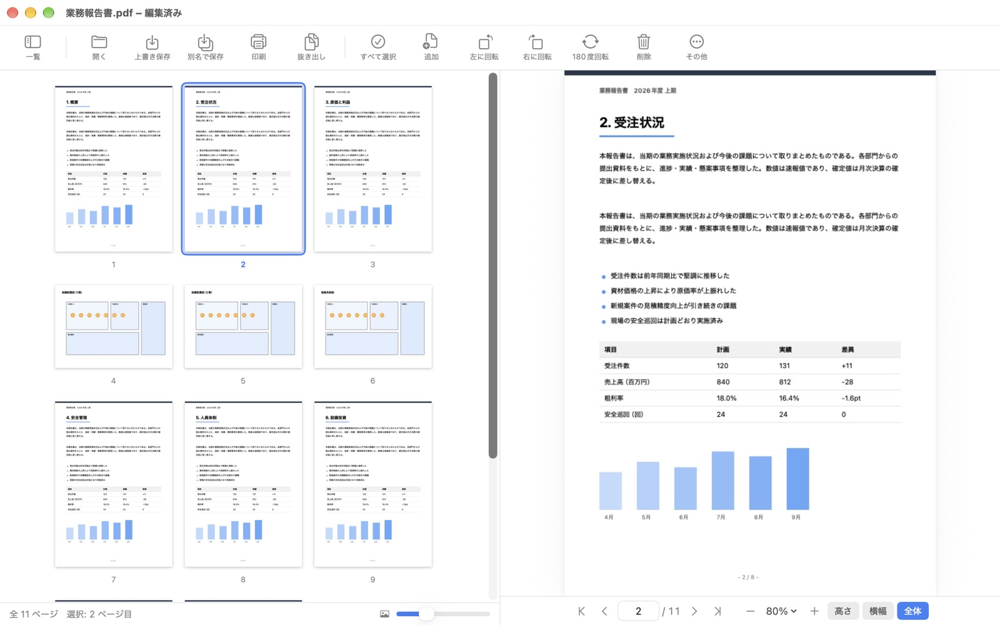
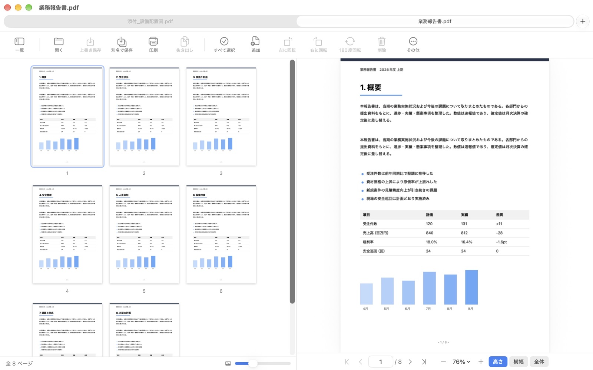
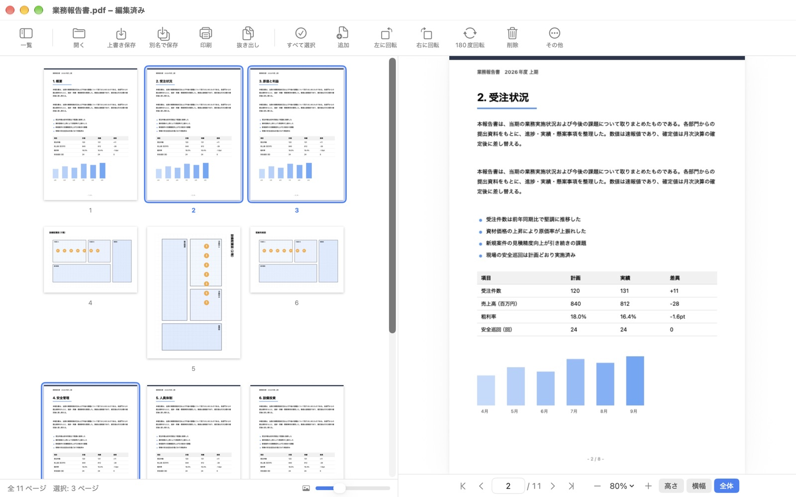
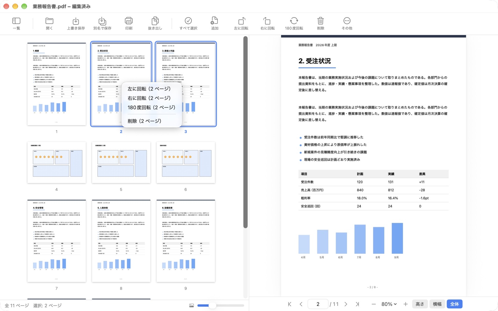
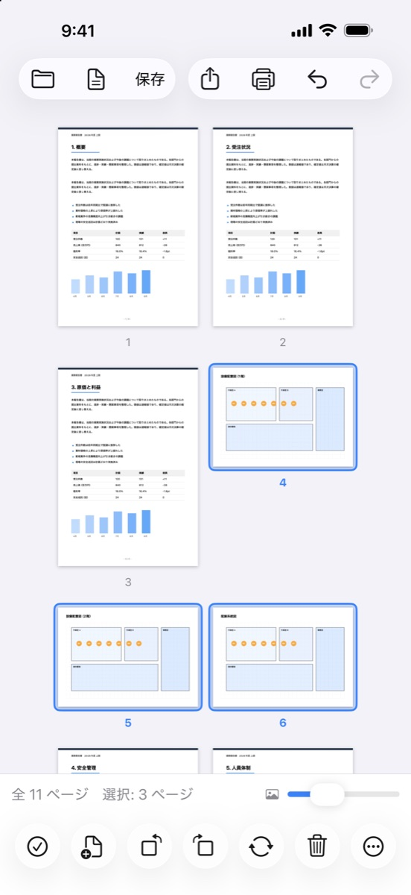
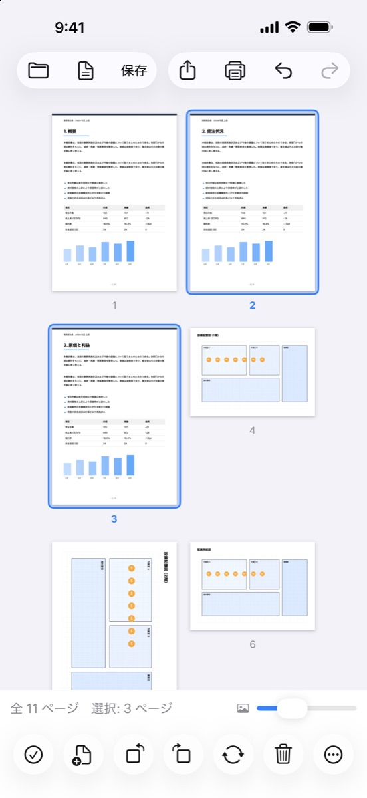
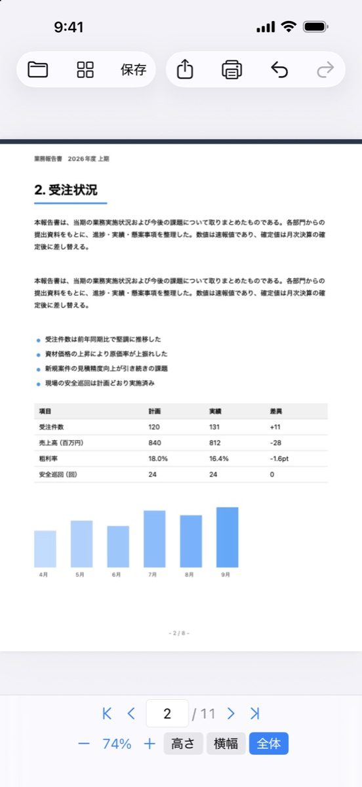

PDF PageRebind
PDF のページを、見ながら組み直す。
PDF の「ページの手直し」だけに絞ったアプリです。サムネイルを見ながら、ページを並べ替え・回転・削除し、別の PDF や写真からページを足して保存します。文字や図の中身には手を付けません。
- Mac
- iPhone
- iPad
- 一度の購入で全部の端末に
- 通信なし・データの収集なし

ページの手直しに、ちょうどいい
結合・並べ替え・回転・抜き出し。PDF を作り直さずに、ページの順番と向きだけを整えたいときのための道具です。
見ながら並べ替え
サムネイルをドラッグして、落とした所の前へ移動。複数を選んでまとめて動かせます。
回転・削除・複製
左右に90度、180度の回転、削除、複製、空白ページの挿入、全ページの逆順。右クリック（長押し）のメニューからも。
結合と写真の取り込み
「追加」で別の PDF や写真（JPEG・PNG・HEIC）を選ぶと、選んだページの後ろへ。写真は A4 に収めて1ページに。
抜き出しと画像の書き出し
選んだページだけを別の PDF に。ページを JPEG 画像にも書き出せます（iPhone・iPad は写真アプリへも）。
両面スキャンを交互に
表と裏で別々になったスキャンを、表1・裏1・表2…の順に合わせます。裏を逆順で読んだ場合にも対応。
今の並びのまま印刷
全ページ、選んだページ、「1-3, 7」のような番号の指定から選んで印刷できます。
複数の書類をタブで
複数の PDF を開いておけて、ページを別の書類へ写せます。元の書類はそのまま。
何段階でも取り消せる
保存するまで元のファイルには書き込みません。間違えても、何段階でも元に戻せます。
画面
横にすべらせると、ほかの画面も見られます。
Mac



iPhone



使い方
開いて、選んで、整えて、保存。
Mac
- 「開く」（⌘O）で PDF を選ぶか、ウインドウに PDF をドロップします。Finder でダブルクリックしても開けます。
- 左の一覧でページをクリックして選びます。⌘クリックで追加、shift クリックで範囲、⌘A で全部。右側に選んだページが大きく表示されます。
- ページをドラッグして別のページの上に落とすと、その前に移動します。複数選んでいればまとめて動きます。
- ボタン列の「左に回転」「右に回転」「180度回転」「削除」で整えます。右クリックメニューからも同じ操作ができます。
- 「追加」で別の PDF や画像を選ぶと、選択中のページの後ろに差し込まれます。
- 「上書き保存」（⌘S）で元のファイルに書き戻します。別のファイルにしたいときは「別名で保存」（⇧⌘S）。
- 複数の PDF はウインドウのタブで開きます（空のタブはファイルメニューの「新しいタブ」、⌘T）。ページのサムネイルを別のタブへドラッグし、タブの上で少し止めるとそのタブに切り替わります。好きな位置に落とすと、ページがその書類へ写ります。元の書類はそのままです。
iPhone・iPad
- 左上のフォルダのボタンで、「ファイル」アプリにある PDF（本体・iCloud Drive・外付けストレージ）を選びます。「ファイル」アプリで PDF を長押しして共有からこのアプリを選んでも開けます。
- ページをタップして選びます（もう一度タップで解除）。iPad では右側に選んだページが大きく表示されます。iPhone では長押しメニューの「拡大表示」で確かめられます。
- ページを長押ししてからドラッグし、別のページの上に落とすと、その前に移動します。
- 下のバーの「左に回転」「右に回転」「180度回転」「削除」で整えます。長押しメニューからも同じ操作ができます。
- 「追加」で別の PDF や写真を選ぶと、選択中のページの後ろに差し込まれます。
- 左上の「保存」から「上書き保存」で元のファイルに書き戻します。「別名で保存」で保存先を選べます。右上の共有ボタンでメールや AirDrop に渡せます。
- 複数の PDF を開いておけます。iPad は画面の上にタブが並び、押して切り替えます。iPhone と iPad の両方で、画面上部のファイル名を押すと開いている書類の一覧が出ます。ページを長押しして「他の書類へコピー」を選ぶと、別の書類の先頭・末尾・指定した位置へページを写せます。
そのほかの機能
- すべて選択、奇数ページだけ・偶数ページだけの選択、「1-3, 7」のような範囲指定（Mac はボタン列の「その他」、iPhone / iPad は下のバーの「その他」）。
- 選んだページだけを別の PDF に書き出す「抜き出し」。
- ビューワーとして読む。開くと 1 ページ目を大きく表示し、右側の下のバーでページ移動と倍率の変更ができます（高さに合わせる・横幅に合わせる・全体）。左の一覧は「一覧」ボタンで隠せます。iPhone は一覧とビューワーを切り替えて使います。
- ページを JPEG 画像で書き出す（1 ページが 1 枚。選んでいなければ全ページ）。Mac はボタン列の「その他」、iPhone / iPad は左上の「保存」から。iPhone / iPad では写真アプリにも保存できます。
- ページの複製、空白ページの挿入、全ページの逆順。
- 両面スキャンの表と裏を交互に合わせる（Mac はページメニューかボタン列の「その他」、iPhone / iPad は下のバーの「その他」）。下の「よくある質問」に使い方があります。
- 今の並びと向きのままの印刷（Mac はボタン列の「印刷」、iPhone / iPad は右上のプリンタのボタン）。全ページ・選んだページ・「1-3, 7」のように番号で指定したページから選べます。番号は今の並びで数えます。
- 変更は何段階でも取り消せます（Mac は ⌘Z、iPhone / iPad は右上の矢印ボタン）。
よくある質問
保存したら元のファイルはどうなりますか？
「上書き保存」は開いたファイルそのものを書き換えます。元を残したいときは「別名で保存」で別のファイルにしてください。保存するまでは元のファイルに一切書き込みません。
ページの中の文字を直せますか？
できません。このアプリはページ単位の操作（並べ替え・回転・削除・追加）に絞っています。文字や図の中身は変えず、そのまま保ちます。
複数の PDF を1つにまとめたい
1つ目を開き、「追加」で残りを選んでください。選んだ PDF の全ページが、選択中のページの後ろ（何も選んでいなければ末尾）に入ります。あとは「別名で保存」で1つのファイルになります。
両面スキャンで、表のページと裏のページが別々になりました
表のファイルを開き、「その他」の「両面スキャンを交互に合わせる」から「この書類が表、別の PDF が裏」の項目を選んで、裏のファイルを選んでください。表1・裏1・表2・裏2という順に並び直します。束を裏返して裏を読ませた場合は裏が最後のページから並んでいるので「裏面を逆順で読み取った」を、1枚目から読ませた場合は「裏面も 1 枚目から読み取った」を選びます。違っていたら取り消して、もう一方を選んでください。表と裏が1つのファイルに続けて入っている場合は「この書類の前半が表、後半が裏」の項目を使います。
写真を PDF のページにできますか？
できます。「追加」で JPEG・PNG・HEIC を選ぶと、1枚が1ページになります。A4 の紙に収め、写真の向きは自動で直します。
パスワード付きの PDF は開けますか？
開くときにパスワードを聞きます。保存すると、パスワードは外れた状態で保存されます。
iPhone / iPad で「別名で保存」したあと、続けて編集すると元のファイルに書き込まれますか？
はい。「別名で保存」は写しを書き出すだけで、編集対象は開いたファイルのままです。写しを編集したいときは、そのファイルを開き直してください。
Mac で共有ボタンが見当たりません
Mac 版には共有ボタンがありません。「別名で保存」してから Finder で共有してください。
お問い合わせ
不具合のご報告やご要望は、メールでお気軽にどうぞ。
PDF PageRebind は外部と通信せず、データを集めません。くわしくは プライバシーポリシー をご覧ください。